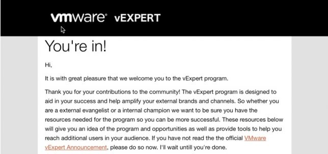
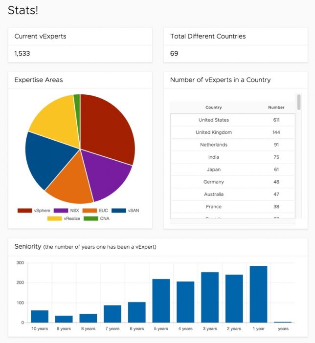

vExpert Classe de 2018
Blog vExpert VMwareCompartilhe esse post nas redes sociais...
Olá Homelabers!
Mais um ano, mais um vExpert. Estou super feliz em pelo terceiro ano consecutivo ter sido escolhido como um VMware vExpert representando o Brasil e essa comunidade maravilhosa.
No último dia 09/03 a VMware fez o anúncio do vExpert 2018. Esse ano, o anúncio foi um pouco diferente e divertido, pois aconteceu de eu estar no Campus da VMware em Palo Alto, CA bem no dia em que o time estava finalizando as escolhas e apertou o botão do tão aguardado e-mail “You’re in”.

Foi uma experiência muito bacana, entender um pouco do processo por trás da seleção e ter a certeza do trabalho enorme que existe para gerenciar um programa das proporções do vExpert. Meus sinceros agradecimentos a todo o time Eric Nilsen (@ericnipro), Corey Romero (@vCommunityGuy), Katie Bradley (@vKTBcommunity) e Martijn Smit (@smitmartijn) pelo excelente trabalho.
Outro destaque vai para o novo site do vExpert (https://vexpert.vmware.com/) muito mais moderno, bonito e funcional. Esse site foi todo desenvolvido pelo Martijn Smit (@smitmartijn) em seu tempo livre.
https://twitter.com/ericnipro/status/972342927274856450
A comunidade vExpert no Brasil
Em 2018 a comunidade vExpert no Brasil conta com 24 membros, sendo 17 veteranos e 07 novatos. Em relação a 2017 temos um vExpert a menos, ou seja, nossa comunidade diminuiu, 08 vExperts Brasileiros não renovaram o título em 2018.
Em 2016 quando eu entrei no programa, éramos 11 Brasileiros.
Em 2017 o número saltou para 18 Brasileiros.
No 2º semestre de 2017 éramos 21 Brasileiros, um número ainda pequeno em vista dos outros países, mas ainda assim um número expressivo.
Eu vejo que o Brasil tem muito espaço para crescer dentro da comunidade vExpert, somos um país GIGANTE e com tecnologia de ponta. Todos os maiores players do mercado estão aqui e temos excelentes profissionais. Na minha opinião, o que falta é uma maior divulgação do programa, mudança na cultura do Brasileiro e um pouco mais de atenção da VMware Brasil - mais isso vai mudar ;)
Aproveitando, temos um grupo do vExpert Brasil no Telegram, sinta-se à vontade para participar. Esperamos você lá link para entrar é: https://t.me/vExpertBrasil (só aceitamos vExperts no grupo).
Lista de vExperts no Brasil
[table id=3 /]
A comunidade vExpert na América Latina
Em 2018 a comunidade vExpert em LATAM ficou estabilizada. Entraram 14 novos vExpert, saíram 14 e 32 veteranos, num total de 46 vExperts (Argentina, Brasil, Chile, Colômbia, Costa Rica, Rep. Dominicana e Paraguai)
A situação da comunidade em LATAM não é das piores, mas igual ao Brasil, existe MUITO espaço para melhorar. Existem países que não tem sequer 1 vExpert como é o caso do Perú, Bolívia, Uruguai, Venezuela, Equador. Custo a acreditar que a VMware não tem presença nesses países ou que não existam profissionais que trabalham com as ferramentas da VMware.
Outros países como Chile (3), Argentina (9), Colômbia (5), assim como o Brasil, tem muito espaço para crescer e é uma vergonha ter uma representação tão pequena.
Mais uma vez, eu acredito que o grande problema é a falta de divulgação do programa fora do EUA e Europa e a cultura do Latino que o impede de se juntar a essas comunidades.
O vExpert em números
Em todo existem 1553 vExpert divididos por 69 países. O Brasil está em 11º lugar, com 24 vExpert, atrás da Espanha com 34. Para ver todas as estatísticas, acesse o link

Considerações finais
Se você é um vExpert Novato, PARABÉNS e aproveite muito todos os benefícios do programa e da comunidade. Continue contribuindo para a comunidade e não se acomode. Faça valer o seu prêmio. Divulgue o programa entre seus amigos, ajude a comunidade crescer, você só tem a ganhar com isso.
Se você é um vExpert Veterano, PARABÉNS e continue com o excelente trabalho que você tem feito. Faça um exercício e pense se você devolveu para a comunidade tudo o que recebeu. Continue contribuindo para a comunidade, divulgando o programa, fazendo ele crescer cada vez mais.
Se você ficou de fora e quer voltar, repense o que você poderia ter feito melhor e comece a trabalhar agora. Não desista.
A todos, recomendo a leitura desse post: O que significa ser um vExpert
Outra dica é assistir esse episódio do VMware Community Podcast, muitas das suas dúvidas serão esclarecidas.
https://www.youtube.com/watch?v=EHCGQc7e30s
Prestigie os vExperts
Aos leitores do blog, peço que prestigiem a todos os vExperts, acompanhando e comentando em seus blogs e redes sociais, apoiando mesmo, pois o nosso “trabalho” é criar conteúdo e trazer informações a vocês!
Como se tornar um vExpert?
Se interessou pelo programa e quer fazer parte? Entre em contato comigo que eu quero te ajudar. Existem vários caminhos que você pode tomar para aplicar o programa. A comunidade do #vExpert é muito grande e os benefícios de participar tanto do programa, como da comunidade são enormes, você só tem a ganhar.
Mais informações nos posts e vídeos abaixo:
http://homelaber.com.br/vbrownbag-brasil-s02e07-programas-de-influencia/
http://homelaber.com.br/papodequinta-13072017-o-programa-vmware-vexpert-2/
http://homelaber.com.br/estao-abertas-as-inscricoes-para-o-programa-vexpert-2017-segundo-semestre/
https://www.youtube.com/watch?v=S4xcuJ_0ut4
Compartilhe esse post nas redes sociais...Valdecir Carvalho
Nerd e pai orgulhoso da Mariana e João. Profissional Sênior de TI com foco em arquitetura de infraestrutura e cloud computing. Blogueiro, podcaster, palestrante, amante de comunidades técnicas, fotógrafo aposentado e adora jogos antigos.
#vExpert · #VMUGLeader · #VUGBrasil · #vBronwBagBrasil · #VeeamVanguard